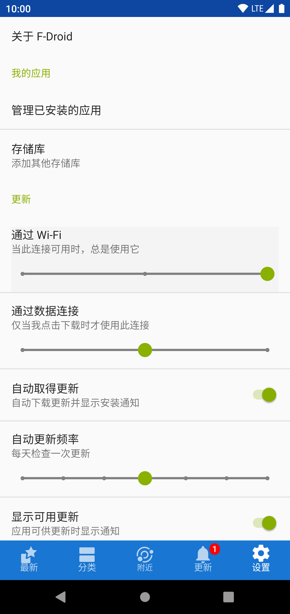
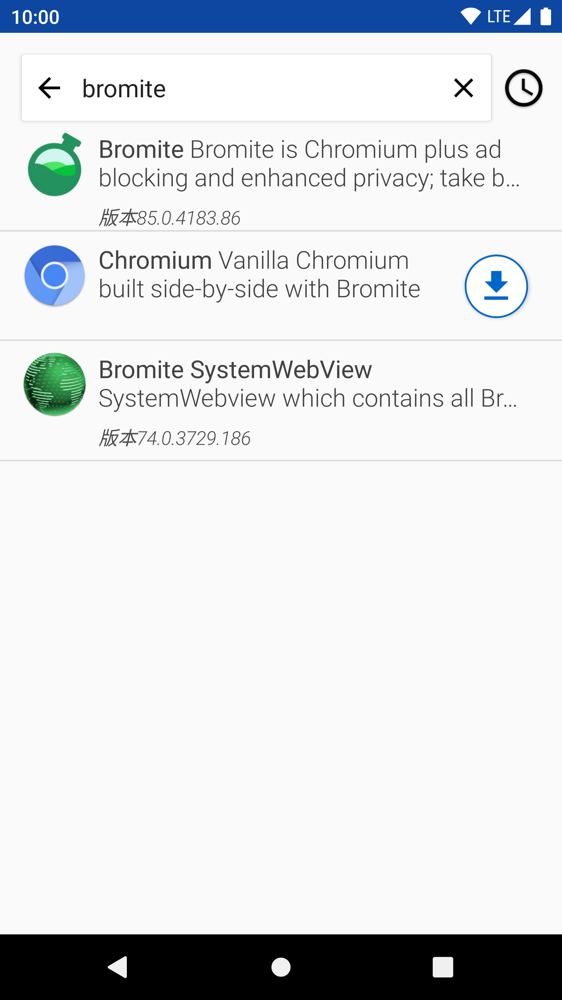
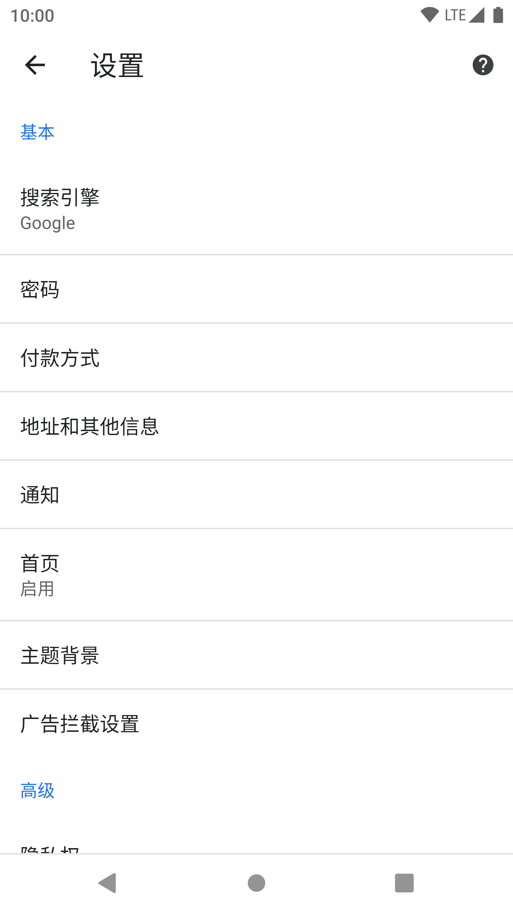
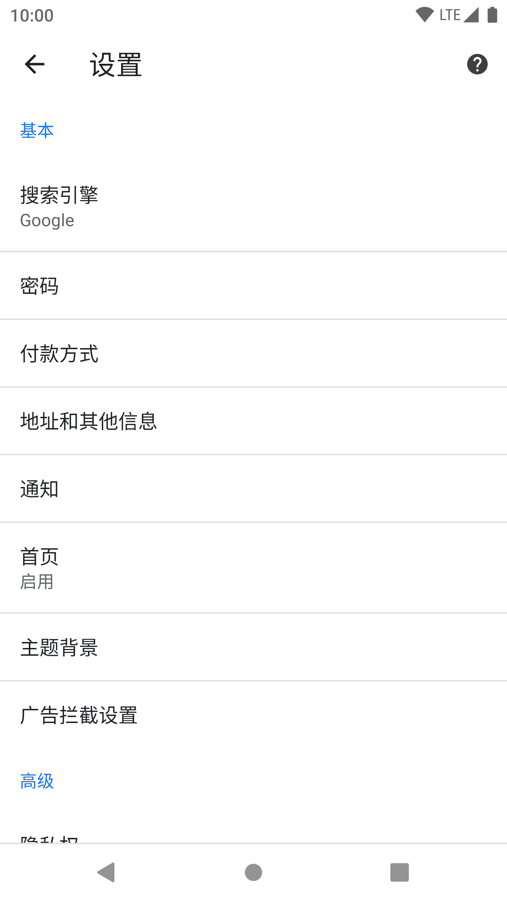
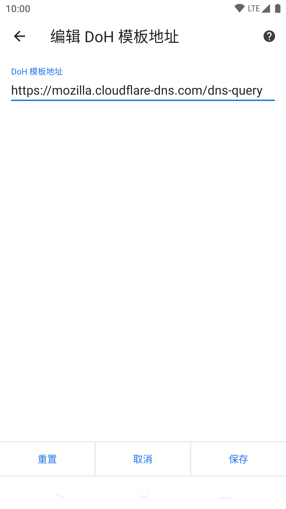
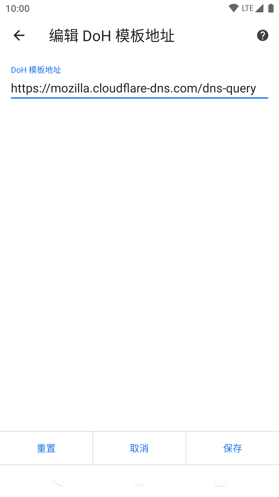
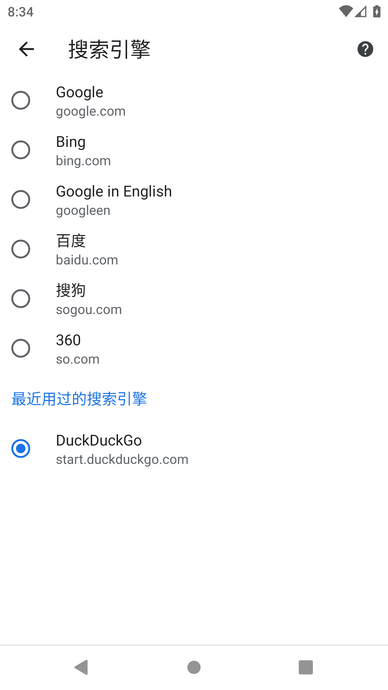
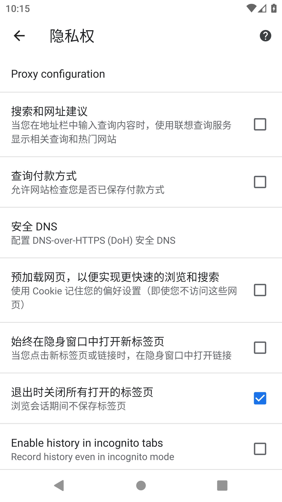
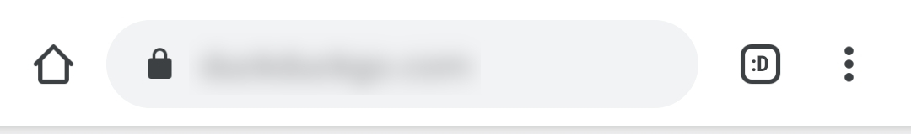

Bromite
Bromite - 你的浏览器应该由你掌控。
一个注重隐私，并且自带广告屏蔽器的 Chromium 修改版
开发者：csagan5 (Bromite Project)
官方网站 | 源代码 (GitHub) | 开源协议 (GPL3)
简介
当你看到上面的描述时，你可能会疑问：“Chromium 是什么？我为什么从来都没有听说有人用过 Chromium? ”
我们来换种方式描述 Chromium 吧，一句话来说：Chromium 是 Google Chrome（谷歌浏览器）的母项目。Google 在维护 Chromium 这个开源项目的同时，会将它的源代码进行修改，并且贴上不同的商标发行。在功能和使用上，两个浏览器几乎相同。
假如你无法理解上面的概念也没关系，只要把 Bromite ，我们这次要介绍的浏览器，看成 Google Chrome 的修改版就行了。
当我们最终安装完成并且打开这个浏览器的时候，假如你用过 Android 版 Chrome ，你会觉得 Bromite 的界面与操作和 Chrome 相差无几。
为什么用 Bromite ，而不用正统的 Chrome?
简短的答案：你在使用 Chrome 的时候，也在使用 Google 的服务。
你可能依然不理解这个答案，那我们来举个例子吧：当你使用 Chrome 访问一个外语网页时（比如，你的手机设置为中文语言，访问英文的网站），界面下方会弹出一个提示：

注意到左下角的  图标了吗？这代表着当你点下翻译（在这个特定的例子里，点击“中文（简体）”）的时候，Chrome 会连接 Google 翻译服务器并且让 Google 翻译来翻译页面的内容。
图标了吗？这代表着当你点下翻译（在这个特定的例子里，点击“中文（简体）”）的时候，Chrome 会连接 Google 翻译服务器并且让 Google 翻译来翻译页面的内容。
从隐私角度来讲，因为 Google 翻译并不是一个开放的服务，所以我们并不知道网页的内容在被送达到 Google 翻译之后发生了什么。Chrome 集成的 Google 服务还包括但不限于 书签同步，“精简模式” 以及 Google 新闻。这些服务都由 Google 提供，而其中涉及的所有数据都经 Google 处理。
因此，Bromite 在 Chromium （Chrome的母项目）基础上，移除了上述来自 Google 的服务。
如果你想要一个 Chromium 内核的 Android 网页浏览器，却不想让自己的数据被商业公司处理，那么 Bromite 是你的绝佳选择。
下载和安装
通过官网安装 Bromite
如果你的设备上有 F-Droid 客户端，建议查看下方“通过 F-Droid 安装 Bromite”的指导。
点击，或是在你常用浏览器的地址栏中输入 bromite.org :
如果你在正在微信内阅读本文，请不要直接点击上方的链接；微信会对下载链接作出不可预测的行为。

你可能在打开这个网页后非常疑惑：为什么我看不到下载按钮？
因为不同 Android 设备不同的硬件架构，不同的设备适用不同的安装包。要下载 Bromite, 滚动到这个页面的最底部：

在上述的 "Download Bromite" 表格中，左侧的 "Architecture" 列代表你将要下载的安装包的处理器架构；一般情况下，你的设备的对应架构会被绿色高亮。在这个例子里，我使用的是一个运行在电脑上的 Android 模拟器，所以 "X86" 架构被高亮。右侧的 "Android Version" 列代表安装包对应的 Android 版本；目前 Bromite 只提供一个 Android 版本选项。
在当前使用的设备上安装
要为你正在使用的设备下载和安装 Bromite ，选中绿色高亮的 "Architecture"，然后点击 "Download Bromite ..."
你的浏览器可能会询问是否保留该文件，点击“确定”。下载完成后，点击“打开”来安装。
假如你之前没有从目前使用的浏览器安装过应用，你需要进行一个额外的步骤允许应用安装。下面的视频展示了 Bromite 的安装以及允许未知来源应用的步骤。
为其它设备安装，或者你的处理器架构没有被高亮
下面描述的是为其它设备下载 Bromite 安装包的方式。如果你不清楚你在做什么，请省略这一步。
如果你的处理器架构并没有被高亮，或者你要为其它设备下载和安装 Bromite, 你需要选择这个设备对应的处理器架构，然后点击 "Download Bromite ..."
“处理器架构”可以理解为设备所使用的处理器的“内部语言”。不同的处理器“语言”之间并不互相兼容。
如果你正在为其它设备下载和安装 Bromite, 下载完成后，你需要将安装包传输到你的目标设备上，并且在目标设备上安装。在为其它设备下载 Bromite 的同时，你应该已经知道了在设备间传输文件的方式，在此不再赘述。
下方的表格列举了一般情况下，设备类型，发布年份以及处理器架构的关系。
下表对处理器架构的推测并非 100% 准确，仅供参考。
| 设备类型 / 发布年份 | 处理器架构 |
|---|---|
| Android 手机、平板（2017年及以后发布） | ARM64 |
| Android 手机、平板（2017年及以前发布），或者你不清楚需要下载什么，或者 ARM64 的安装包安装失败了 | ARM |
| Android 模拟器，双系统平板，Android-X86 电脑（Remix OS、凤凰 OS、Prime OS、Bliss OS X86 ...） | X86 |
通过 F-Droid 安装 Bromite
如果你已经跟着上一步通过官网安装了 Bromite，可以省略这一步。但你也可以为了后续更新的方便在 F-Droid 上添加 Bromite 的存储库。
F-Droid 的官方仓库并没有提供 Bromite，但是 Bromite Project 提供了可以添加到 F-Droid 客户端的仓库，让用户能更方便地更新 Bromite.
在进行下面的步骤之前，请确保你已经在设备上安装了 F-Droid 客户端。关于安装 F-Droid 的指导，请点击这里。
要将 Bromite 的仓库添加到 F-Droid 客户端，长按下方二维码并点击“复制链接”，或者保存并识别下面的二维码：
请勿使用微信识别二维码。微信会对识别的链接作出不可预测的行为。
复制链接之后， 打开 F-Droid 客户端，点击底栏的“设置” 进入设置界面。在设置界面，点击“存储库”：
进入“存储库”之后，点击右上角的 号：

因为 F-Droid 会自动识别已经复制的内容，弹出的“添加新的存储库”对话框内应该已经填写了 Bromite F-Droid 存储库的信息。
如果对话框内的文本是空的，你应该回到这部分的开头，重新复制或者识别二维码所包含的链接。

当你确认对话框内的信息无误，点击“添加” 来把 Bromite 的存储库添加到 F-Droid 里。当你点击完“添加”，“存储库”列表最底端会出现一个“未验证”的存储库。稍等片刻，F-Droid 客户端会自动验证该存储库，并且最终的存储库名为 "Bromite official F-Droid repository".


回到“设置”界面，点击底栏的“最新”，你就可以看到右下角的 按钮了。在“搜索”界面里搜索 "Bromite", 然后在下方点击 "Bromite" 行来查看 Bromite 的详细信息。在此你可以点击“安装”来安装 Bromite. 关于在 F-Droid 里搜索和安装应用的详细指导，请点击这里。

使用 Bromite
如果你之前在 Android 上使用过 Chrome, 那么当你打开 Bromite 的时候会感觉无比亲切：它看起来和 Chrome 几乎一模一样！
正因如此，这里不会赘述 Bromite (Chrome) 的基本使用，而是着重描述一些 Bromite 和 Chrome 的区别，以及一些隐私相关的注意事项。
因为 Bromite 的更新，本文可能不会随时保持最新。如果你有任何的疑惑，请参考 Bromite Wiki.
DNS over HTTPS
中国联通、Comcast 等网络运营商被证实进行过多种中间人攻击；使用运营商提供的 DNS 存在被 DNS 污染的风险。根据政府要求，中国所有网络运营商提供的 DNS 都被污染以配合防火长城的运作。未来不排除网络运营商通过中间人攻击进行 DNS 劫持（即便使用了未被污染的 DNS 服务器，查询结果也因为中间人攻击而被污染）的可能。
DNS over HTTPS 是一个将 DNS 请求进行加密的方案。其意义在于 将 DNS 请求使用 HTTPS 协议加密，来防止可能的中间人攻击 污染 DNS 查询结果。通过在浏览器内使用 DNS over HTTPS, 你可以指定一个 DNS 服务器列表并且与它们进行加密的 DNS 查询。
下述 DoH 为 DNS over HTTPS 的简称。
Bromite 可以使用 DoH, 但这个功能默认关闭。要启用 DoH, 我们首先要选择一个 DoH 提供商。
网络上有很多 DoH 提供商。你可以基于个人喜好，地理位置和网络情况，以及他们的隐私条款来选择 DoH 提供商。下面是一个 DoH 提供商的简表，你可以根据下表来选择自己的 DoH 模板地址，也可以参照 privacytools.io 的列表来选择。
下面的步骤将使用 Cloudflare 与 Mozilla 合作的 DoH 服务作为示例。如果你想要使用一个不同的 DoH 提供商，请将步骤中的 https://mozilla.cloudflare-dns.com/dns-query 链接替换成你的 DoH 模板链接。
在上表长按然后复制你想要的 DoH 模板链接， 在这个例子中，https://mozilla.cloudflare-dns.com/dns-query. 在长按弹出的对话框中，点击“复制链接地址”。

复制之后，点击 Bromite 右上角的 ，然后点击“设置”：
如果你看不到地址栏和 ，请向上滚动（手指向下移动）一下页面。
 

在“设置”界面，向下滑动直到你能看到“隐私权”，点击“隐私权”。在“隐私权”界面，点击“安全 DNS”：

在“安全 DNS”界面，点击“关闭”右侧的开关来打开安全 DNS。现在你应该能看到一个“启用”以及一个打开的开关。

步骤到此还没结束，我们还需要点击 "DoH 模板地址" 并且 输入刚才复制的地址 ：
 

输入完成后点击“保存”。在此 DoH 配置完成，你可以点几次返回来回到浏览状态。
添加和设置搜索引擎
尽管 Bromite 是一个“反 Google”的项目，它的默认搜索引擎依然是 Google. 无可否认，Google 在某些标准上是目前“最好用”的搜索引擎。但从隐私角度出发，它也有着一些致命的缺陷。其中的例子有：你的搜索请求被用于精准推广用途；多次被内容农场污染搜索结果...
你可能想把 Google 替换成例如 DuckDuckGo 等更尊重隐私的搜索引擎。
DuckDuckGo 的隐私条款请见https://duckduckgo.com/privacy。
位于 -> 设置 -> 搜索引擎，根据你设置的系统语言和地区，Bromite 预置了原版 Chrome 预置的所有搜索引擎：


如果你是一个中文的 DuckDuckGo 用户，你可能会疑惑：为什么我找不到 DuckDuckGo 作为我的搜索引擎？
DuckDuckGo 确实没有被内置到中文的 Chrome 当中。有一个解决方法：访问一下 DuckDuckGo , 然后再次访问“搜索引擎”菜单，你就能在“最近用过的搜索引擎”下找到 DuckDuckGo 了。在“搜索引擎”菜单选中 DuckDuckGo, 现在 DuckDuckGo 就是你的默认搜索引擎了。
然而，在 noarch 的测试当中，这个方法并不 100% 有效... 下面的视频展示了另一个有效的方法。如果让 Bromite 自动添加 DuckDuckGo 的方法失败了，你可以尝试下面的方法。
下面的视频使用类原生 Android 作为示例。不同手机厂商系统的操作可能会有差别。
广告拦截
Bromite 自带广告拦截功能，并且广告拦截功能默认开启。
如果广告拦截破坏了某些网页的正常使用，你可以在访问它们之前关闭广告拦截，然后在访问结束后打开：
在 -> 设置 -> 广告拦截设置，你可以开关广告拦截以及自定义广告拦截规则列表。点击“启用”右侧的开关将其“关闭”，就可以关闭广告拦截。


关于自定义广告拦截的指导，请见https://www.bromite.org/custom-filters .
不在退出后保留标签页
在 Bromite 和 Chrome 的默认设置中，打开 Bromite 的时候会自动恢复上一次浏览时的标签页（网页）。你可能不想让它恢复上一次的标签页，那么你可以进入 -> 设置 -> 隐私权，并且选中“退出时关闭所有打开的标签页”。
彩蛋：如果你在 Bromite 或 Chrome 打开了超过 99 个标签页，它依然会保持微笑！
